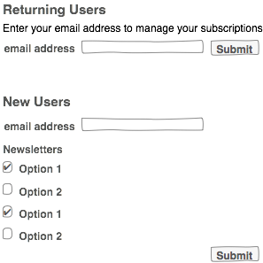

django-newsletters v0.1a1 documentation
index: Allows new users to sign up for newsletters
user newsletter management: Allows a user change the subscription status of all the newsletters. This does not do atomic changes. It changes the status for all newsletters at once.
newsletter detail: Provides the HTML of the newsletter. Renders the first template it finds in the order:
The template will have the following variables in the context:
Management of newsletter subscriptions is managed through a simple API:
A GET or POST request to the newsletter index page returns a page with a form for signing up, a list of the available newsletters with checkboxes, and a field to enter the e-mail address.
If the request also includes format=JSON, the newsletter list and signup URL are sent in JSON format.
A GET or POST request to the newsletter index page with the parameter u and the users e-mail address (u=username@example.com) will redirect to the newsletter manage page, which includes the list of newsletters that the e-mail address is subscribed and allows the user to modify the list.
A summary is provided below:
| Request Type | Has u | has format | Result |
|---|---|---|---|
| GET | No | No | HTML newsletter sign up form |
| GET | Yes | No | Redirect to manage page for user |
| GET | No | Yes | JSON newsletter list and sign up URL |
| GET | Yes | Yes | Redirect to manage page for user |
| POST | No | No | HTML newsletter sign up form |
| POST | Yes | No | Redirect to manage page for user |
| POST | No | Yes | JSON newsletter list and sign up URL |
| POST | Yes | Yes | Redirect to manage page for user |
Here is an example subscription landing page.
